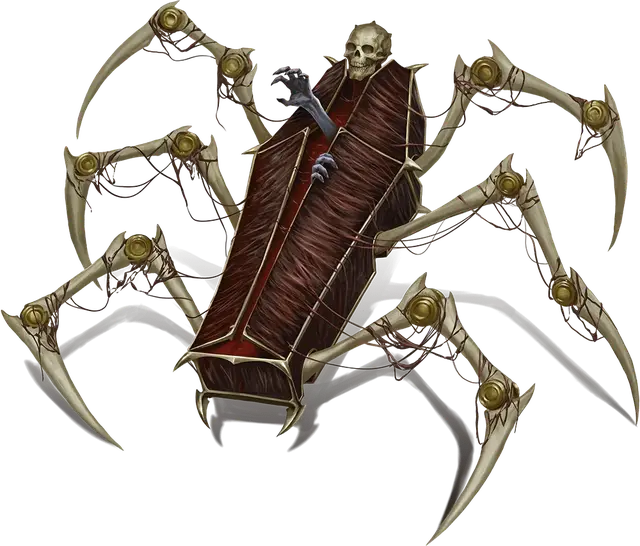

Оживленный гроб
Animated Coffin
Большой Конструкт, без мировоззрения

Класс Доспеха 16 (природный доспех)
Хиты 60 (8к10 + 16)
Скорость 30 футов, лазая 30 футов
| мод | спас | ||
|---|---|---|---|
| СИЛ | 16 | +3 | +3 |
| ЛОВ | 12 | +1 | +1 |
| ТЕЛ | 15 | +2 | +2 |
| мод | спас | ||
|---|---|---|---|
| ИНТ | 3 | −4 | −4 |
| МДР | 11 | +0 | +0 |
| ХАР | 3 | −4 | −4 |
Иммунитет к урону психическая энергия, яд
Иммунитет к состояниям глухота, испуг, истощение, окаменение, ослепление, отравление, очарование, паралич
Чувства слепое зрение 60 футов (слеп за его пределами), пассивное Восприятие 10
Языки понимает языки своего создателя, но не говорит
Опасность 3 (700 опыта)
Бонус мастерства +2
Особенности
Обманчивая внешность. Если оживленный гроб неподвижен в начале боя, у него есть преимущество при броске инициативы. Более того, если существо не наблюдало, как гроб двигается или действует, это существо должно успешно пройти проверку Сл 18 Интеллекта (Расследование), чтобы определить, что гроб одушевлен.
Паучье лазанье. Оживленный гроб может лазать по труднопроходимым поверхностям, включая потолки, без необходимости совершения проверок характеристик.
Действия
Мультиатака. Оживленный гроб совершает две атаки Размашистым ударом.
Размашистый удар. . Рукопашная атака оружием: +5 к попаданию, досягаемость 5 фт, одна цель. Попадание: 12 (2к8 + 3) дробящего урона.
Заманить в ловушку. . Рукопашная атака оружием: +5 к попаданию, досягаемость 5 футов, одно Большое существо или меньше. Попадание: Цель становится схваченной (Сл высвобождения 13). Пока захват не закончится, если цель не является Нежитью, она считается опутанной и получает 14 (4к6) колющего урона в начале каждого хода. Оживленный гроб может одновременно держать схваченным только одно существо.
Описание
Оживленные гробы - это тяжелые, жуткие конструкты, предназначенные для перевозки умерших к местам упокоения. Они расхаживают по залам Морга, подбирая трупы и перенося их на следующий этап похоронного процесса.
Оживленный гроб оснащен множеством паучьих металлических ножек, с помощью которых он скользит по крутым склонам, стенам и потолкам, а просторное внутреннее пространство гроба усеяно выдвижными шипами. Как и их неодушевленные аналоги, оживленные гробы варьируются от простых деревянных ящиков с простой фурнитурой до изысканных позолоченных саркофагов и благоговейных гробов, обшитых тканью.
За пределами Города Дверей оживленные гробы выполняют аналогичные (хотя и менее индустриальные) функции. Действующие в засадах и неутомимые часовые, оживленные гробы охраняют древние некрополи, семейные склепы и логова могущественной нежити. В оживленном гробу может спать вампир, чтобы днем ускользать от охотников, в то время как некромант может использовать оживленные гробы для доставки трупов из далеких поселений в свою армию нежити.
Оживленные гробы редко бывают пустыми. В таблице Содержимое Оживленного Гроба представлено некоторое содержимое, которое может находиться в оживленном гробу при вскрытии.
Содержимое Оживленного Гроба
| к6 | Содержимое |
| 1 | 1к4 роя летучих мышей [swarm of bats] |
| 2 | 1к4 скелета [skeleton], упакованные как сардины в банке |
| 3 | Стонущая мумия [mummy] |
| 4 | Пятно желтой плесени |
| 5 | Дремлющее порождение вампира [vampire spawn] |
| 6 | Портал на Тропу Могил |